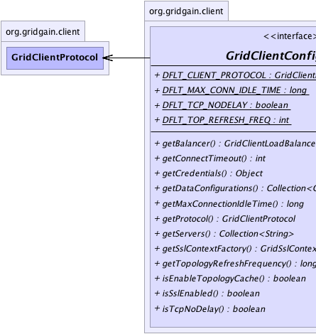
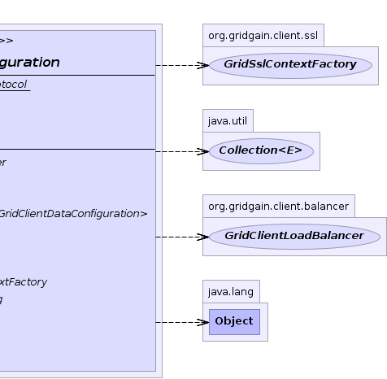

|
|

|

|
|

|

|
|
GridGain™ 4.0.1
Java Client |
|||||||||
| PREV CLASS NEXT CLASS | FRAMES NO FRAMES | |||||||||
| SUMMARY: NESTED | FIELD | CONSTR | METHOD | DETAIL: FIELD | CONSTR | METHOD | |||||||||
public interface GridClientConfiguration
Java client configuration.
| Wiki | |
| Forum |
|  |  |
| Field Summary | |
|---|---|
static GridClientProtocol |
DFLT_CLIENT_PROTOCOL
Default client protocol. |
static long |
DFLT_MAX_CONN_IDLE_TIME
Default maximum time connection can be idle. |
static boolean |
DFLT_TCP_NODELAY
Default flag setting for TCP_NODELAY option. |
static int |
DFLT_TOP_REFRESH_FREQ
Default topology refresh frequency is 2 sec. |
| Method Summary | |
|---|---|
GridClientLoadBalancer |
getBalancer()
Default balancer to be used for computational client. |
int |
getConnectTimeout()
Gets timeout for socket connect operation. |
Object |
getCredentials()
Gets client credentials to authenticate with. |
Collection<GridClientDataConfiguration> |
getDataConfigurations()
Gets a collection of data configurations specified by user. |
long |
getMaxConnectionIdleTime()
Gets maximum amount of time that client connection can be idle before it is closed. |
GridClientProtocol |
getProtocol()
Gets protocol for communication between client and remote grid. |
Collection<String> |
getServers()
Collection of 'host:port' pairs representing
remote grid servers used to establish initial connection to
the grid. |
org.gridgain.client.ssl.GridSslContextFactory |
getSslContextFactory()
Gets a factory that should be used for SSL context creation if SSL is enabled. |
long |
getTopologyRefreshFrequency()
Gets topology refresh frequency. |
boolean |
isEnableTopologyCache()
Enables client to cache topology internally, so it does not have to be always refreshed. |
boolean |
isSslEnabled()
Flag indicating whether client should try to connect server with secure socket layer enabled (regardless of protocol used). |
boolean |
isTcpNoDelay()
Gets flag indicating whether TCP_NODELAY flag should be enabled for outgoing connections. |
| Field Detail |
|---|
static final GridClientProtocol DFLT_CLIENT_PROTOCOL
static final int DFLT_TOP_REFRESH_FREQ
static final long DFLT_MAX_CONN_IDLE_TIME
static final boolean DFLT_TCP_NODELAY
| Method Detail |
|---|
Collection<String> getServers()
'host:port' pairs representing
remote grid servers used to establish initial connection to
the grid. Once connection is established, GridGain will get
a full view on grid topology and will be able to connect to
any available remote node.
'host:port' pairs representing remote
grid servers.GridClientProtocol getProtocol()
int getConnectTimeout()
boolean isTcpNoDelay()
TCP_NODELAY flag should be enabled for outgoing connections.
This flag reduces communication latency and in the majority of cases should be set to true. For more
information, see Socket.setTcpNoDelay(boolean)
If not set, default value is GridClientConfiguration.DFLT_TCP_NODELAY
TCP_NODELAY should be set on underlying sockets.boolean isSslEnabled()
True if SSL should be enabled.org.gridgain.client.ssl.GridSslContextFactory getSslContextFactory()
GridSslContextFactory,
GridClientConfiguration.isSslEnabled()GridClientLoadBalancer getBalancer()
Collection<GridClientDataConfiguration> getDataConfigurations()
Object getCredentials()
null)boolean isEnableTopologyCache()
GridClientConfiguration.getTopologyRefreshFrequency() interval.
True if topology cache is enabled, false otherwise.long getTopologyRefreshFrequency()
long getMaxConnectionIdleTime()
|
GridGain™ 4.0.1
Java Client |
|||||||||
| PREV CLASS NEXT CLASS | FRAMES NO FRAMES | |||||||||
| SUMMARY: NESTED | FIELD | CONSTR | METHOD | DETAIL: FIELD | CONSTR | METHOD | |||||||||
|
GridGain - Real Time Big Data
|
|
|